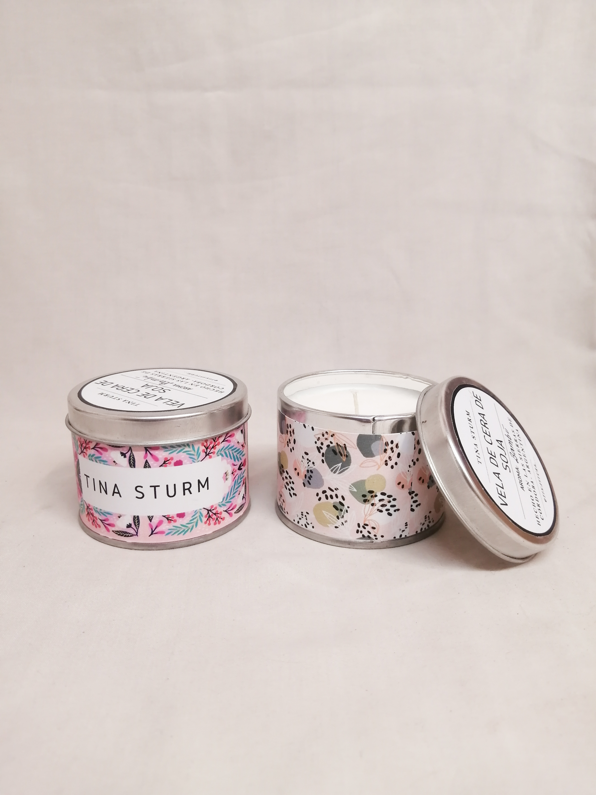
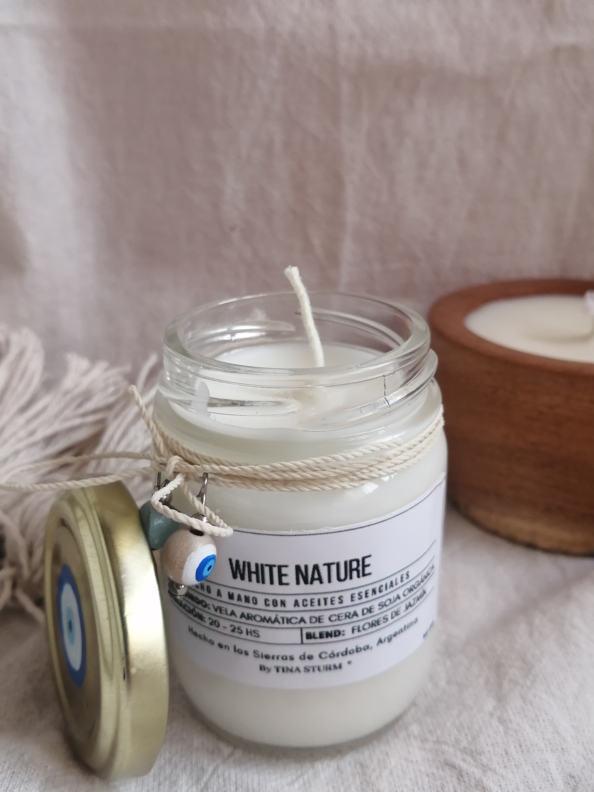
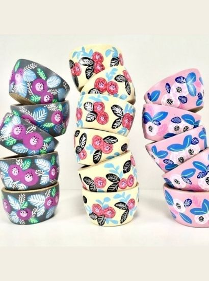

Sets materos
Mates y azucareras con tapa pintados a mano con diseños propios.

Mate huevito
Con mariposas multicolores.

Sets materos
Mates y azucareras con tapa pintados a mano con diseños propios.

Latitas con onda
Una vez consumida la vela, te queda la lata con tapa para guardar lo que quieras

Velas de soja
Lavanda y romero para armonizar el ambiente

Piedras y sus energías
Las nuevas velas en frasco traen una piedra amuleto para ayudarte a conectar con el presente.

Mates personalizados
Intervenidos con brillo y amuletos ¡Pedilo con el dije que vos quieras!

Cuencos multiuso
¡El aliado perfecto para tus picadas! Cuencos de madera de algarrobo que no vas a poder dejar de usar

Mate bombón
Los mates intervenidos llegaron para quedarse